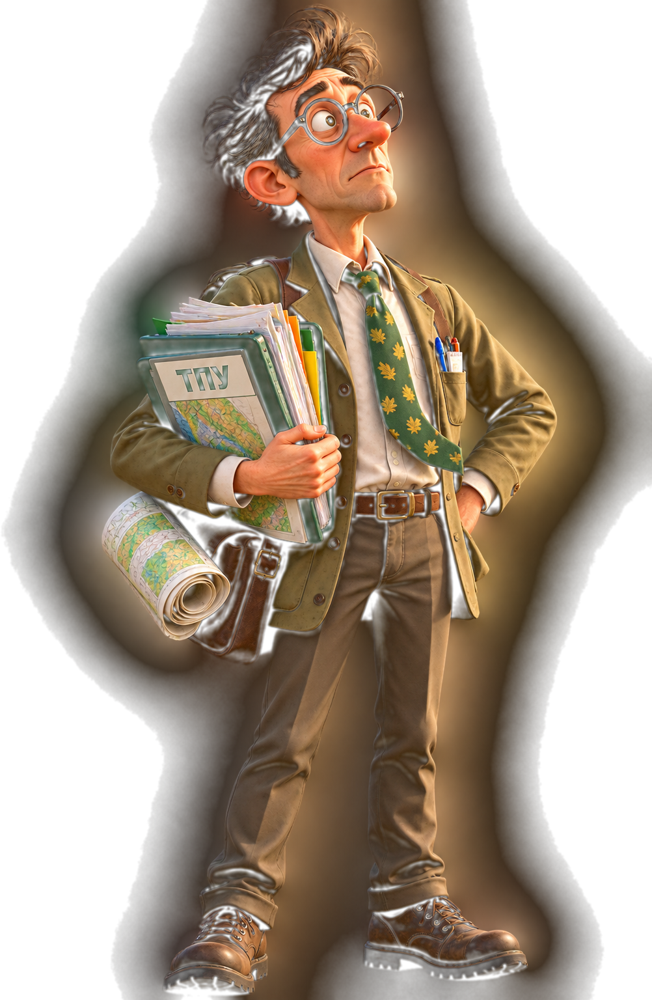

От картите, документите и научните данни — към живата природа.
Всяка защитена зона има своя история, своите видове и своите ценности.
Един по-интересен начин да опознаем защитените зони на Пловдивския регион.
Влез в интерактивния свят и избери откъде да започнеш.